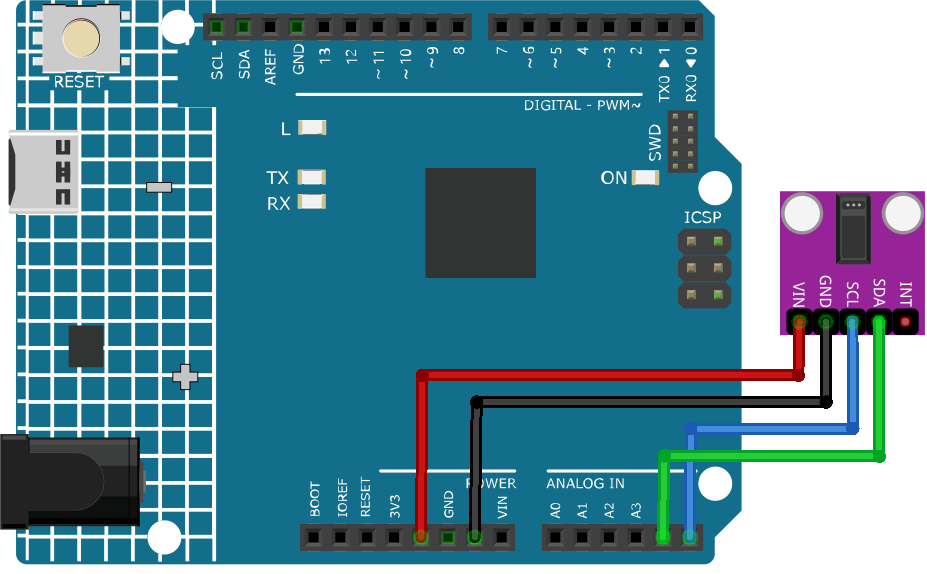

Bemerkung
Hallo und willkommen in der SunFounder Raspberry Pi & Arduino & ESP32 Enthusiasten-Gemeinschaft auf Facebook! Tauchen Sie tiefer ein in die Welt von Raspberry Pi, Arduino und ESP32 mit anderen Enthusiasten.
Warum beitreten?
Expertenunterstützung: Lösen Sie Nachverkaufsprobleme und technische Herausforderungen mit Hilfe unserer Gemeinschaft und unseres Teams.
Lernen & Teilen: Tauschen Sie Tipps und Anleitungen aus, um Ihre Fähigkeiten zu verbessern.
Exklusive Vorschauen: Erhalten Sie frühzeitigen Zugang zu neuen Produktankündigungen und exklusiven Einblicken.
Spezialrabatte: Genießen Sie exklusive Rabatte auf unsere neuesten Produkte.
Festliche Aktionen und Gewinnspiele: Nehmen Sie an Gewinnspielen und Feiertagsaktionen teil.
👉 Sind Sie bereit, mit uns zu erkunden und zu erschaffen? Klicken Sie auf [hier] und treten Sie heute bei!
Pulsoximeter und Herzfrequenzsensor (MAX30102)

Einleitung
Der MAX30102 ist ein Sensor, der ein Pulsoximeter und ein Herzfrequenzmessgerät kombiniert. Es handelt sich um einen optischen Sensor, der die Absorption von pulsierendem Blut durch einen Fotodetektor misst, nachdem er zwei Lichtwellenlängen von zwei LEDs ausgestrahlt hat - eine rote und eine infrarote. Diese spezielle LED-Farbkombination ist so konzipiert, dass Daten mit der Fingerspitze gelesen werden können.
Prinzip
Der MAX30102 funktioniert, indem er beide Lichter auf den Finger oder Ohrläppchen (oder im Grunde überall, wo die Haut nicht zu dick ist, sodass beide Lichter das Gewebe leicht durchdringen können) strahlt und die Menge des reflektierten Lichts mit einem Fotodetektor misst. Diese Methode der Pulserfassung durch Licht wird als Photoplethysmogramm bezeichnet.
Die Funktionsweise des MAX30102 kann in zwei Teile unterteilt werden: Herzfrequenzmessung und Pulsoximetrie (Messung des Sauerstoffgehalts des Blutes).
Herzfrequenzmessung
Das sauerstoffreiche Hämoglobin (HbO2) im arteriellen Blut hat die Eigenschaft, IR-Licht zu absorbieren. Je röter das Blut (je höher das Hämoglobin), desto mehr IR-Licht wird absorbiert. Da das Blut mit jedem Herzschlag durch den Finger gepumpt wird, ändert sich die Menge des reflektierten Lichts, wodurch sich eine veränderliche Wellenform am Ausgang des Fotodetektors ergibt. Wenn Sie weiterhin Licht ausstrahlen und Fotodetektor-Messungen durchführen, erhalten Sie schnell eine Herzfrequenz (HR) Messung.
Pulsoximetrie
Die Pulsoximetrie basiert auf dem Prinzip, dass die Menge des absorbierten ROTEN und IR-Lichts je nach Menge des Sauerstoffs in Ihrem Blut variiert.
Anwendungsbeispiele
Hardware-Komponenten
Arduino Uno R4 oder R3 Board * 1
Pulsoximeter und Herzfrequenzsensor(MAX30102) * 1
Jumperkabel
Schaltungsaufbau


Programmcode
Warnung
Dieser Sketch erkennt die Herzfrequenz optisch. Diese Methode kann zu falschen Messwerten führen. Bitte NICHT für echte medizinische Diagnosen verwenden.
Bemerkung
Um die Bibliothek zu installieren, verwenden Sie den Arduino Library Manager und suchen nach „SparkFun MAX3010x“ und installieren Sie diese.
Code-Erklärung
Einbinden von Bibliotheken & Initialisierung globaler Variablen:
Die erforderlichen Bibliotheken werden importiert, das Sensorobjekt wird instanziert und globale Variablen für die Datenverwaltung werden festgelegt.
Bemerkung
Um die Bibliothek zu installieren, verwenden Sie den Arduino Library Manager und suchen nach „SparkFun MAX3010x“ und installieren Sie diese.
#include <Wire.h> #include "MAX30105.h" #include "heartRate.h" MAX30105 particleSensor; // ... (andere globale Variablen)
Setup-Funktion & Sensorinitialisierung:
Die serielle Kommunikation wird mit einer Baudrate von 9600 initialisiert. Die Verbindung des Sensors wird überprüft und bei Erfolg wird eine Initialisierungssequenz ausgeführt. Bei Nichterkennung des Sensors wird eine Fehlermeldung angezeigt.
void setup() { Serial.begin(9600); if (!particleSensor.begin(Wire, I2C_SPEED_FAST)) { Serial.println("MAX30102 not found."); while (1) ; // Infinite loop if sensor not detected. } // ... (further setup)
IR-Wert lesen & Herzschlag überprüfen:
Der IR-Wert, der auf den Blutfluss hinweist, wird vom Sensor abgerufen. Die Funktion
checkForBeat()prüft anhand dieses Wertes, ob ein Herzschlag erkannt wird.long irValue = particleSensor.getIR(); if (checkForBeat(irValue) == true) { // ... (heartbeat detected actions) }
Berechnung der Herzschläge pro Minute (BPM):
Bei Erkennung eines Herzschlags wird der BPM-Wert anhand der Zeitdifferenz seit dem letzten erkannten Herzschlag berechnet. Der Code stellt sicher, dass der BPM-Wert in einem realistischen Bereich liegt, bevor der Durchschnitt aktualisiert wird.
long delta = millis() - lastBeat; beatsPerMinute = 60 / (delta / 1000.0); if (beatsPerMinute < 255 && beatsPerMinute > 20) { // ... (store and average BPM) }
Werte im Serial Monitor ausgeben:
Der IR-Wert, der aktuelle BPM-Wert und der durchschnittliche BPM-Wert werden im Serial Monitor angezeigt. Zusätzlich prüft der Code, ob der IR-Wert zu niedrig ist, was auf das Fehlen eines Fingers hindeuten könnte.
//Print the IR value, current BPM value, and average BPM value to the serial monitor Serial.print("IR="); Serial.print(irValue); Serial.print(", BPM="); Serial.print(beatsPerMinute); Serial.print(", Avg BPM="); Serial.print(beatAvg); if (irValue < 50000) Serial.print(" No finger?");
Weitere Ideen
LEDs hinzufügen, die bei jedem erkannten Schlag aufleuchten
Ein kleines OLED- oder LCD-Display verwenden, um Echtzeit-BPM-Werte und andere relevante Daten anzuzeigen.